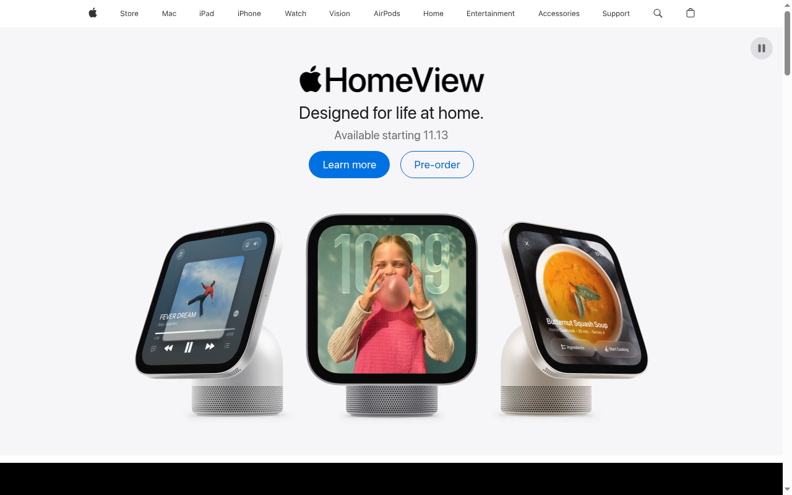

A Node.js toolkit for stealth, persistent Google Chrome sessions — with live VNC control, web scraping, web search, and agent tooling built in.
# Launch a live, watchable Chrome over VNC npm run vnc -- --resolution 1920x1080 # Drive it command-by-command, get JSON back npm run live -- goto https://example.com npm run live -- dump # One-shot stealth headless browsing node headless.js --shot https://example.com # Check how undetectable you are node headless.js --check https://bot.sannysoft.com
Everything you need to browse, scrape, and automate without tripping bot detection.
Patches navigator.webdriver, window.chrome, WebGL vendor, plugins, permissions, UA, and automation flags before any page script runs.
Cookies, localStorage, sessions, service workers, and IndexedDB all survive between runs. Solve a CAPTCHA once, stay logged in forever.
Watch and steer a real headed Chrome over noVNC. Attach via Chrome DevTools Protocol with connectOverCDP() — never relaunch, never lose your session.
Navigate, click, fill, extract, screenshot, PDF, tabs, contexts, agent tabs, pause/resume HUD — all JSON-in/JSON-out for agent integration.
DuckDuckGo HTML, Brave, and SearXNG with a transparent fallback chain. No API keys needed.
Auto-screenshot on load, or ad-hoc. Full page, viewport, element, region — PNG, JPEG, or PDF export.
dataforthai.com directory scraper with batch runner, resumability, and list-only fast mode. Extract CSS, tables, links, regex, page JSON via CLI.
Local analytical storage with db-insert, db-select, db-query commands. Works with no browser running.
Expose local ports as shareable URLs via Cloudflare, ngrok, or custom providers — password enforced locally, not by the provider.
One command starts the full stack: virtual display, real Chrome, VNC viewer, and CDP endpoint.
Launches Xvfb + headed Chrome + x11vnc + noVNC on one command.
Open the noVNC viewer to see the screen. Attach over CDP and drive it live — commands return JSON.
An overlay HUD shows current action, progress, and notifications. Pause to hand control to a human.
Save to DuckDB, store scripts for live-run, relaunch against the same persistent profile.
The agent drives. You step in when it matters.
Navigation, form filling, clicking, extracting data, taking screenshots — the agent does the repetitive work so you don't have to. Every action returns JSON, so you can pipe it into your own pipelines.
Hit npm run live -- pause and the agent stops. A HUD overlay appears on the VNC screen with a Resume button. You solve the CAPTCHA, pick the right option, or make the call — then click Resume and the agent picks up right where it left off.
Cookies, sessions, and login state survive across runs. Solve a CAPTCHA once in headed mode, and the agent inherits that clean session every time it relaunches.

Real headed Chrome driving apple.com over VNC — 1280×800, full stealth layer active
How ServerBrowser keeps Chrome real, persistent, and hard to detect.
| Layer | What it does |
|---|---|
stealth.js | Init script injected before page scripts — patches webdriver, chrome object, WebGL, plugins, permissions, UA |
vnc-driver.js | Launches headed Chrome with stealth + HUD, exposes CDP port, stays running for live attach |
live.js | 59 commands over CDP — navigation, interaction, extraction, screenshots, tabs, datastore, tunnels |
connect.js | Same commands against a remote Chrome via CDP_URL — no local browser needed |
live-run.js | Intercepts chromium.launch() in stored scripts and redirects to the live browser |
standalone/ | Scriptable CLI: browser, tunnel, AI, and API key groups — all JSON-in/JSON-out |
datastore/ | DuckDB-backed local storage — works with no browser, no network |
Start with the quickstart, then go as deep as you need.